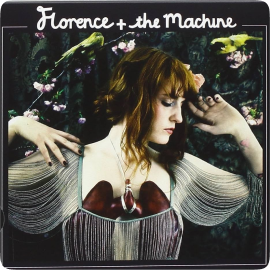

 Tocar prévia
Tocar prévia
Lungs
Florence and the Machine
Tocar prévia
90
Nota crítica
Nota user
- Dog Days Are Over
- Rabbit Heart
- I'm Not Calling You a Liar
- Howl
- Kiss with a Fist
- Girl With One Eye
- Drumming Song
- Between Two Lungs
- Cosmic Love
- My Boy Builds Coffins
- Hurricane Drunk
- Blinding
- You've Got the Love